An Introduction to CellaRepertorium
Andrew McDavid
University of Rochester, Department of Biostatistics and Computational BiologyAndrew_McDavid@urmc.rochester.edu Source:
vignettes/cr-overview.Rmd
cr-overview.RmdCongratulations on your installation of CellaRepertorium. This package contains methods for manipulating, clustering, pairing, testing and conducting multimodal analysis single cell RepSeq data, especially as generated by 10X Genomics Chromium Immune Profiling.
Ethos and data structure
The fundamental unit this package operates on is the contig, which is a section of contiguously stitched reads from a single cell. Each contig belongs to one (and only one) cell, however, cells may generate multiple contigs.

Contigs belong to cells, and can also belong to a
cluster. A ContigCellDB() object tracks
these two types of membership by using a sequence of three
data.frames (dplyr::tibble(), actually).
ContigCellDB() also tracks columns (the primary keys) that
uniquely identify each row in each of these tables. The
contig_tbl is the tibble containing
contigs, the cell_tbl contains the
cells, and the cluster_tbl contains the
clusters.

The contig_pk, cell_pk and
cluster_pk specify the columns that identify a contig, cell
and cluster, respectively. These will serve as foreign keys that link
the three tables together.
Manipulation
We’ll start in media res with an example of
minimially-processed annotated contigs from Cellranger. For details on
how to import your own CellRanger data, as well QC steps that could be
performed, see vignette('mouse_tcell_qc').
library(CellaRepertorium)
library(dplyr)
#>
#> Attaching package: 'dplyr'
#> The following objects are masked from 'package:stats':
#>
#> filter, lag
#> The following objects are masked from 'package:base':
#>
#> intersect, setdiff, setequal, union
data("contigs_qc")
cdb = ContigCellDB_10XVDJ(contigs_qc,
contig_pk = c('barcode', 'pop', 'sample', 'contig_id'),
cell_pk = c('barcode', 'pop', 'sample'))This constructs a ContigCellDB object, specifying that
the columns barcode, pop, sample,
and contig_id unique identify a contig, so are its
primary keys, and that columns barcode,
pop, sample are the cell primary keys.
We can manipulate the contig_tbl with the $
operator.
cdb$contig_tbl$cdr_nt_len = nchar(cdb$contig_tbl$cdr3_nt)Or with the mutate_cdb function, which saves a few
keystrokes.
suppressPackageStartupMessages(library(Biostrings))
cdb = cdb %>% mutate_cdb(cdr3_g_content = alphabetFrequency(DNAStringSet(cdr3_nt))[,'G'], tbl = 'contig_tbl')
head(cdb$contig_tbl, n = 4) %>%
select(contig_id, cdr3_nt, cdr_nt_len, cdr3_g_content)
#> # A tibble: 4 × 4
#> contig_id cdr3_nt cdr_nt_len cdr3_g_content
#> <chr> <chr> <int> <int>
#> 1 AAAGTAGTCGCGCCAA-1_contig_1 TGTGCCAGCAGTCCGACAGACTA… 36 8
#> 2 AAAGTAGTCGCGCCAA-1_contig_2 TGTGCCTGGAGTCCCGGGGACAA… 39 12
#> 3 AAAGTAGTCGCGCCAA-1_contig_4 TGTGCTATAGAGGCAGGCAATAC… 39 9
#> 4 AACCATGCATTTGCCC-1_contig_3 TGTGCTGTGAGCGCATACCAGGG… 42 14Other functionality, some of which is depicted in
vignette('mouse_tcell_qc') and
vignette('cdr3_clustering') includes:
- Exploring pairing (classical alpha-beta or heavy-light, single
chain, or >1 chain type) with
enumerate_pairing. - Splitting by a factor with
split_cdb. - Filtering with
filter_cdb. - Canonicalization with
canonicalize_cell. This chooses a representative contig for each cell and copies various fields into thecell_tblso that the contig-cell relationship in these fields is now one-to-one. This is useful for any analysis of contigs that requires the cell as its base. Likewisecanonicalize_clusterchoses a representative contig for each cluster.
Clustering
We provide an R port of the fast biostring clustering algorithm CD-HIT (Fu et al. 2012).
aa80 = cdhit_ccdb(cdb, 'cdr3', type = 'AA', cluster_pk = 'aa80',
identity = .8, min_length = 5)
aa80 = fine_clustering(aa80, sequence_key = 'cdr3', type = 'AA')
#> Calculating intradistances on 997 clusters.
#> SummarizingThis partitions sequences into sets with >80% mutual similarity in
the amino acid sequence, adds some additional information about the
clustering, and returns it as a ContigCellDB object named
aa80. The primary key for the clusters is aa80.
head(aa80$cluster_tbl)
#> # A tibble: 6 × 3
#> aa80 avg_distance n_cluster
#> <dbl> <dbl> <int>
#> 1 1 0 1
#> 2 2 0 1
#> 3 3 0 2
#> 4 4 0 1
#> 5 5 0 1
#> 6 6 0 1
head(aa80$contig_tbl) %>% select(contig_id, aa80, is_medoid, `d(medoid)`)
#> # A tibble: 6 × 4
#> contig_id aa80 is_medoid `d(medoid)`
#> <chr> <dbl> <lgl> <dbl>
#> 1 ATCTACTCAGTATGCT-1_contig_3 1 TRUE 0
#> 2 ACTGTCCTCAATCACG-1_contig_3 2 TRUE 0
#> 3 CACCTTGTCCAATGGT-1_contig_2 3 TRUE 0
#> 4 CACCTTGTCCAATGGT-1_contig_2 3 FALSE 0
#> 5 CGGACGTGTTCATGGT-1_contig_1 4 TRUE 0
#> 6 CTGCTGTTCCCTAATT-1_contig_4 5 TRUE 0The cluster_tbl lists the 997 80% identity groups found,
including the number of contigs in the cluster, and the average distance
between elements in the group. In the contig_tbl, there are
two columns specifying if the contig is_medoid, that is, is
the most representative element of the set and the distance to the
medoid element d(medoid).
Other functionality to operate on clustering include:
-
cluster_germline()defines clusters using combinations of factors in thecontig_tbl, such as the V- and J-gene identities.
Pairing
One of the main benefits of single cell repertoire sequencing is the
ability to recover both light and heavy chains, or alpha and beta chains
of B cells and T cells. Pairing is a property of the
cell_tbl. We provide a number of tools to analyze and
visualize the pairing.
library(ggplot2)
paired_chain = enumerate_pairing(cdb, chain_recode_fun = 'guess')
ggplot(paired_chain, aes(x = interaction(sample, pop), fill = pairing)) +
geom_bar() + facet_wrap(~canonical, scale = 'free_x') +
coord_flip() + theme_minimal()We first determine how often cells were paired, and how often
non-canonical multi-alpha or multi-beta cells are found.
T cells with two alpha chains, and to a lessor extent, two beta chains
are an established phenomena (Padovan et al.
1993, 1995; He et al. 2002). However, if the rate of these
so-called dual TCR cells is too high, then multiplets or excess ambient
RNA may be suspected. (B plasma cells seem to be particularly sticky,
and are laden with immunoglobulin RNA).
Enumerating clonotypically expanded pairs
Besides this high-level description of the rate and characteristics
of the pairing, we want to discover pairs that occur repeatedly. For
that, we can use the pairing_tables function.
First we copy some info into the cluster_tbl from the
medoid contig:
aa80 = canonicalize_cluster(aa80, representative = 'cdr3',
contig_fields = c('cdr3', 'cdr3_nt', 'chain', 'v_gene', 'd_gene', 'j_gene'))
#> Filtering `contig_tbl` by `is_medoid`, override by setting `contig_filter_args == TRUE`
aa80$cluster_pk = 'representative'The representative just gives the clusters a more useful
unique name (the CDR3 animo acid sequence). The other information would
be helpful with visualizing and understanding the results of the
pairing.
Next we provide an ordering for each contig in a cell:
aa80 = rank_chain_ccdb(aa80)In this case the contigs will be picked by the beta/alpha chain of
the cluster. Other options are possible, for instance the prevalence of
the cluster with rank_prevalence_ccdb, which would allow
detection to see expanded, dual-TCR pairings (alpha-alpha or
beta-beta).
Finally, we generate the pairings.
pairing_list = pairing_tables(aa80, table_order = 2, orphan_level = 1, min_expansion = 3, cluster_keys = c('cdr3', 'representative', 'chain', 'v_gene', 'j_gene', 'avg_distance'))By default, this is subset to a list suitable for plotting in a
heatmap-like format, so includes only expanded pairings. You can get all
pairings by setting min_expansion = 1, and force inclusion
or exclusion of particular clusters with cluster_whitelist
or cluster_blacklist.
pairs_plt = ggplot(pairing_list$cell_tbl, aes(x = cluster_idx.1_fct, y = cluster_idx.2_fct)) +
geom_jitter(aes(color = sample, shape = pop), width = .2, height = .2) +
theme_minimal() + xlab('TRB') + ylab('TRA') +
theme(axis.text.x = element_text(angle = 45))
pairs_plt = map_axis_labels(pairs_plt, pairing_list$idx1_tbl, pairing_list$idx2_tbl, aes_label = 'chain')
#> Loading required namespace: cowplot
pairs_plt
Testing
If the experiment that generated the data was a designed experiment,
it might be of interest to test clusters for differential abundance. We
implement ordinary and mixed-effect logistic and binomial tests. See
cluster_logistic_test for details and
vignette('cdr3_clustering') for an example.
We also implement a permutation test which may be suitable for
testing for various phylogenetic properties of clonotypes, such as the
clonotype diversity or polarization. Cluster assignments are permutated
by cells, possibly conditioning on less granular covariates. See
cluster_permute_test and
vignette('cdr3_clustering').
Multimodal Analysis
ContigCellDB objects can be included as a field on the
colData of a SingleCellExperiment. This
permits various multimodal analyses, while maintaining the
correspondence between the cells in the SinglCellExperiment
and the cells in the ContigCellDB. See
vignette('repertoire_and_expression').
Acknowledgments
Development of CellaRepertorium was funded in part by UL1 TR002001 (PI Bennet/Zand) pilot to Andrew McDavid.
Colophone
sessionInfo()
#> R version 4.1.2 (2021-11-01)
#> Platform: aarch64-apple-darwin20 (64-bit)
#> Running under: macOS Monterey 12.3.1
#>
#> Matrix products: default
#> BLAS: /Library/Frameworks/R.framework/Versions/4.1-arm64/Resources/lib/libRblas.0.dylib
#> LAPACK: /Library/Frameworks/R.framework/Versions/4.1-arm64/Resources/lib/libRlapack.dylib
#>
#> locale:
#> [1] en_US.UTF-8/en_US.UTF-8/en_US.UTF-8/C/en_US.UTF-8/en_US.UTF-8
#>
#> attached base packages:
#> [1] stats4 stats graphics grDevices utils datasets methods
#> [8] base
#>
#> other attached packages:
#> [1] ggplot2_3.3.5 Biostrings_2.62.0 GenomeInfoDb_1.30.1
#> [4] XVector_0.34.0 IRanges_2.28.0 S4Vectors_0.32.3
#> [7] BiocGenerics_0.40.0 dplyr_1.0.8 CellaRepertorium_1.7.1
#> [10] BiocStyle_2.22.0
#>
#> loaded via a namespace (and not attached):
#> [1] Rcpp_1.0.8 lattice_0.20-45 tidyr_1.2.0
#> [4] png_0.1-7 assertthat_0.2.1 rprojroot_2.0.2
#> [7] digest_0.6.29 utf8_1.2.2 plyr_1.8.6
#> [10] R6_2.5.1 evaluate_0.15 highr_0.9
#> [13] pillar_1.7.0 zlibbioc_1.40.0 rlang_1.0.2
#> [16] rstudioapi_0.13 jquerylib_0.1.4 Matrix_1.3-4
#> [19] rmarkdown_2.13 pkgdown_2.0.2 labeling_0.4.2
#> [22] textshaping_0.3.6 desc_1.4.1 stringr_1.4.0
#> [25] munsell_0.5.0 RCurl_1.98-1.6 compiler_4.1.2
#> [28] xfun_0.30 pkgconfig_2.0.3 systemfonts_1.0.4
#> [31] htmltools_0.5.2 tidyselect_1.1.2 tibble_3.1.6
#> [34] GenomeInfoDbData_1.2.7 bookdown_0.25 fansi_1.0.2
#> [37] withr_2.5.0 crayon_1.5.0 bitops_1.0-7
#> [40] grid_4.1.2 gtable_0.3.0 jsonlite_1.8.0
#> [43] lifecycle_1.0.1 DBI_1.1.2 magrittr_2.0.2
#> [46] scales_1.1.1 cli_3.2.0 stringi_1.7.6
#> [49] cachem_1.0.6 reshape2_1.4.4 farver_2.1.0
#> [52] fs_1.5.2 bslib_0.3.1 ellipsis_0.3.2
#> [55] ragg_1.2.2 generics_0.1.2 vctrs_0.3.8
#> [58] cowplot_1.1.1 forcats_0.5.1 tools_4.1.2
#> [61] glue_1.6.2 purrr_0.3.4 fastmap_1.1.0
#> [64] yaml_2.3.5 colorspace_2.0-3 BiocManager_1.30.16
#> [67] memoise_2.0.1 knitr_1.37 sass_0.4.1